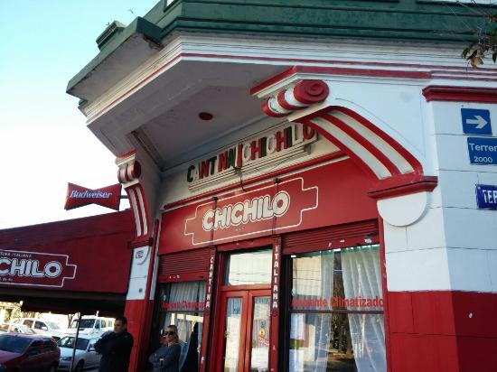
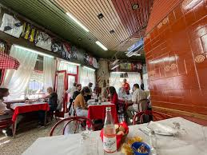
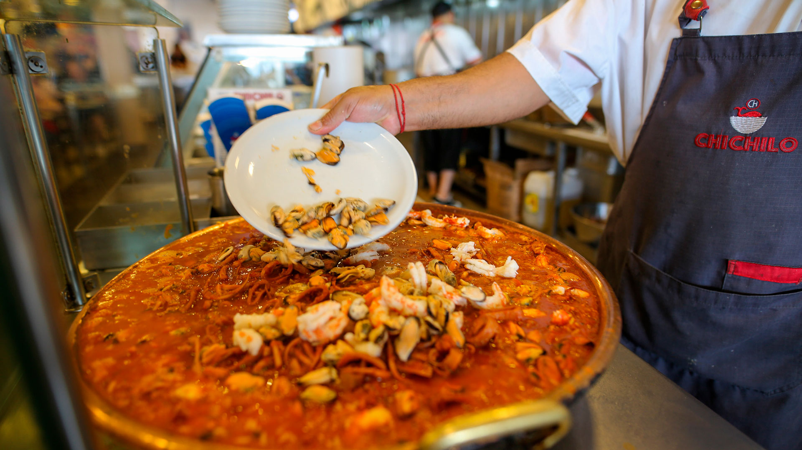

Sobre Nosotros
Cantina Chichilo de Buenos Aires desde hace 65 años al servicio del buen comer, atendidos por sus dueños en un barrio de famosos "LA PATERNAL". Además, la producción de POL-KA la eligió para la apertura de la novela "Ilusiones" y "El sodero de mi vida". Es el lugar preferido de Diego Maradona. Nos destacamos por nunca dejar con hambre al cliente, con productos de calidad y una cantidad considerable.




Contacto
Para reservas, contáctanos al: 011-4581-1984 / 011-4584-1263
Email: chichilo3554@hotmail.com
Dirección
Camarones 1901 - CABA